EasyGoing allows easy trip-planning in just three steps:
1. Add the locations you're visiting.
2. Let EasyGoing optimize the trip and customize as you please.
3. Review your itinerary before exporting it to your calendar!
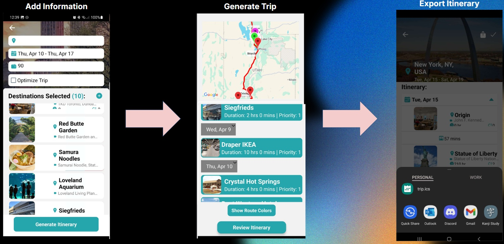
Home Screen
On the Navigation Bar below, there are five buttons:
Home: Recommendations and Trip Functionalities
Bookmark: View Bookmarked Locations
Search: An AI Assistant GoBot for Travel Questions
Calendar: View and Edit Existing Trips
Account: User Settings and Profile
Home
On the main home screen, you can navigate to create or edit new/existing trips.
Below are AI recommendations for destinations you may want to visit. The different categories allow you to narrow your search for recommendations.
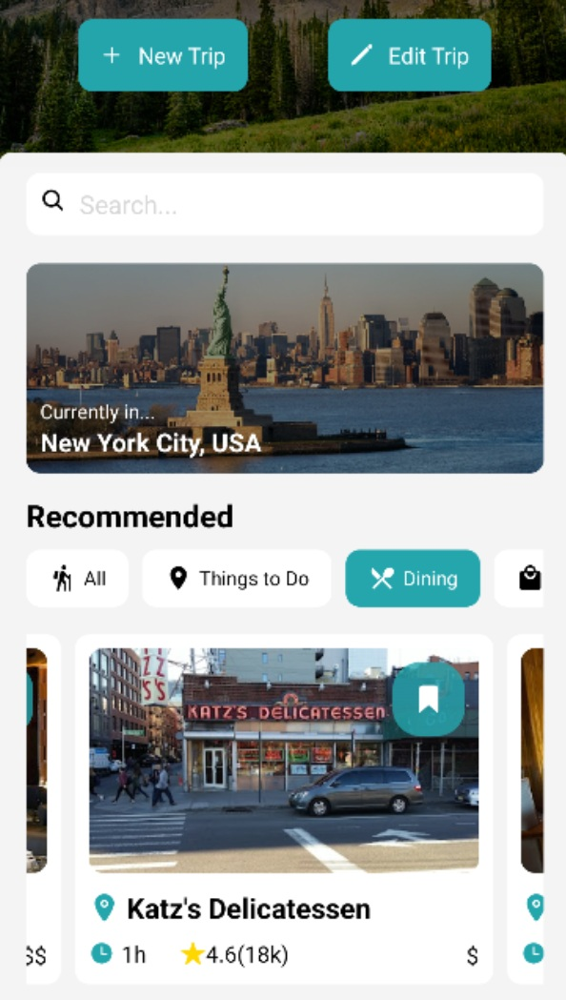
Bookmark
Here, you can review your current saved destinations, which can be used for new and existing trips.
Search
GoBot is an AI-powered bot that will assist you with any questions you may have about trip planning. From locations to visit to how to use the app, GoBot will clear up any confusion you may have.
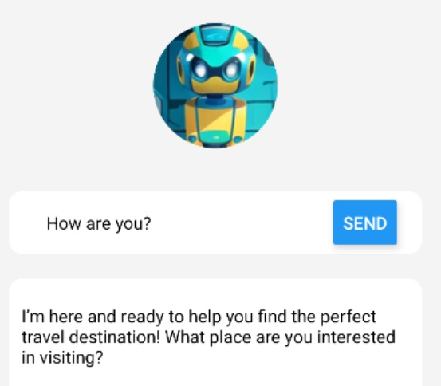
Calendar
All of your preexisting trips are shown here, sorted by most recently created. You're able to edit, rename, or delete them at your convenience.
You may also navigate to create a new trip by pressing the '+' in the top right corner.
Additionally, you can manage your budget here by clicking on the three dots to visit the Budget Manager screen.
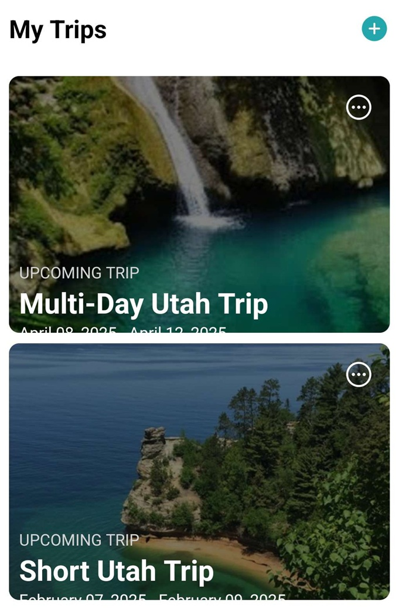
Budget Manager
Your expenses are shown here and are divided into different predefined categories:
Hotel
Transportation
Food
Things To Do
Other
You're able to see the percentage you have spent in each category, individually view expenses in your history, remove incorrect transactions, and review the summary of your spent budget.
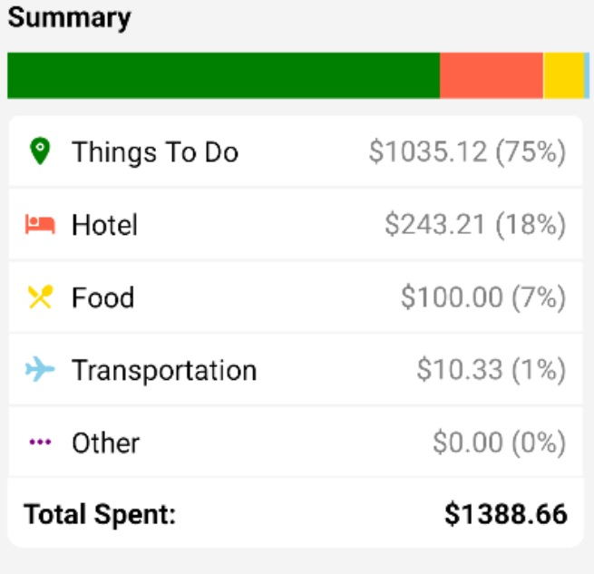
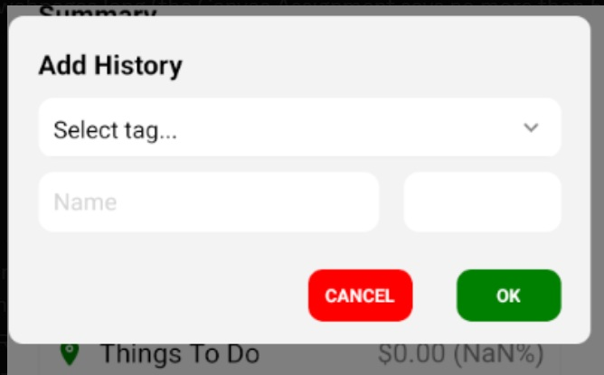
Account
You can view your current account and make changes to default settings, account changes, etc.
Create New Trip
Upon navigating to this screen, you will be prompted to enter a name for your trip. This is optional and you can rename your trip later on the Calendar Screen if you wish to do so.
Only three pieces of information are required before proceeding to the next screen:
Place: The country/state/city you plan to visit by selecting a typed-in autocomplete address.
Dates: The range of days you plan your trip to be chosen with a CalendarPicker.
Budget: The amount you're willing to spend on the trip in your desired currency.
Step 1:
Add Destinations
From the proceeding screen Create New Trip, here, you add all the locations you want to visit.
You will additionally see a few required inputs to fill out:
Origin:Required - This is where you will start your trip from; whether it's the airport you arrive at or from your home.
Dates:Optional - If you wish to change your dates, you may select new days with the CalendarPicker here.
Budget:Optional - You may change your proposed budget here.
Optimize:Optional - If you wish for EasyGoing to optimize your schedule and reorder locations, please check this box. Otherwise, EasyGoing will load your trip in order of how you added them to the list.
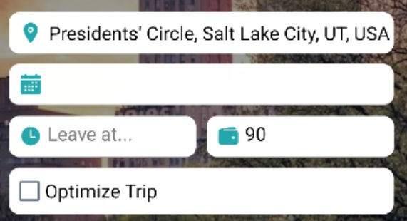
When adding a new destination you can choose to either add a new destination or import from your saved locations.
Clicking to Import Saved Locations will allow you to choose from the recommended destinations you saved from the Home Screen.
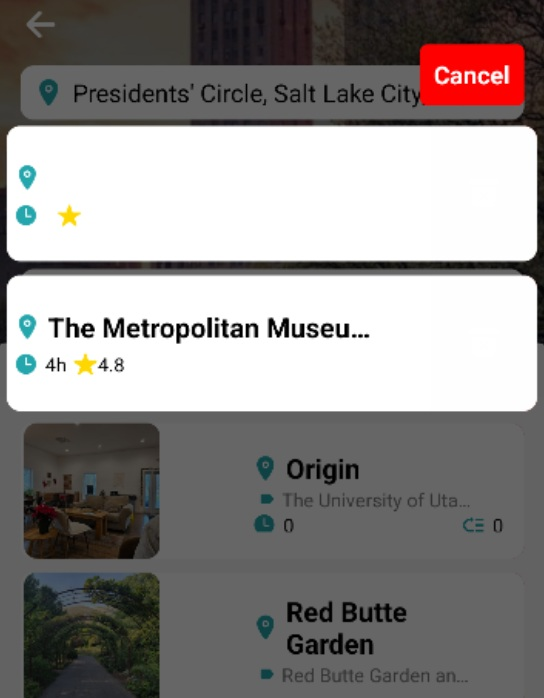
A prompt will then pop up (for both new and imported destinations) requiring you to fill in the rest of the information:
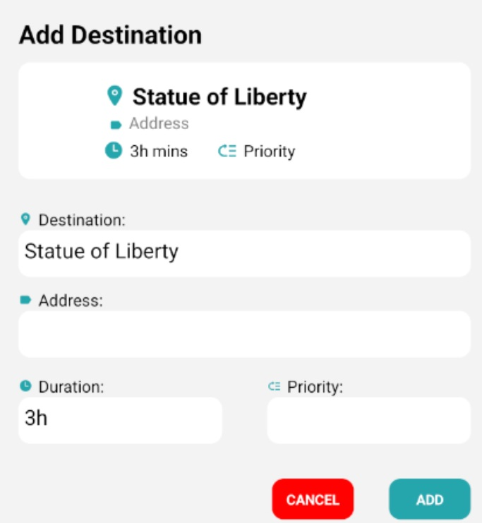
Alias:Required - A name of your choosing to remember this location.
Address:Required - The exact address of the location, chosen with the autocomplete textbox.
Duration:Required - How long you plan on staying at this destination.
Priority:Optional - If all your locations exceed the total time than your given dates, the Priority System will activate. Locations with a lower number (i.e, 1) are marked as higher priority while larger numbers (i.e, 10) will be removed first. The default priority level is 1.
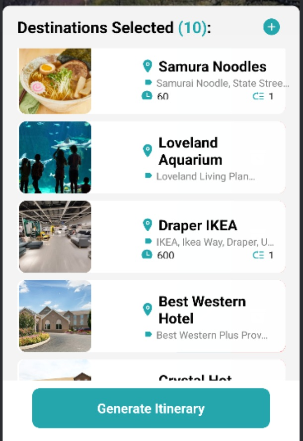
Additionally, you may edit or delete any existing locations you have added on this trip. The minimum number of required locations is two.
Please note that you may not have two of the same locations in the same trip.
Trips which require flights or long-distance travel by sea are also not allowed.
EasyGoing will remind you of these limitations if you are to accidentally do so.
Once you're done, you may click on "Generate Itinerary" to head to Step 2.
Step 2:
Generate Itinerary
Upon hitting "Generate Itinerary" from the Add Destinations Screen, EasyGoing will find routes between your locations and optimize the trip if you had deemed necessary.
Once the trip has loaded, you will be able to view your whole trip loaded on the map, which shows driving routes by default.
Pressing date headers will show routes for that day's trip only while pressing it again will revert to showing all trips.
Pressing each location will print up the directions to get to the next destination. Additionally, you're able to change the mode of transportation here. While the transportation mode is changing, you're unable to change it again along with reordering locations until it has finished loading.
Please note that a change in transportation may end up exceeding the amount of time in that day. You're able to keep the mode change but EasyGoing will remind you that in doing so, your trip for that day exceeds the 16-hour limit.
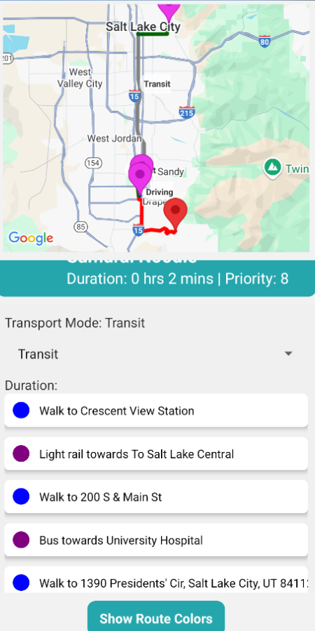
Pressing the Up/Down button below each corresponding location will switch its order with the location above/below it respectively and the map will generate the new route and directions. Please note that you are unable to change the origin and can only reorder locations within days but not across different ones.
A Route Color Key is provided for you to see which color represents which mode of transportation on the map. This is especially useful for public transportation.
Please note that in East Asian countries and forbidden territories, public transportation route information may not be availible. EasyGoing will default back to driving mode in cases where such information cannot be gathered.
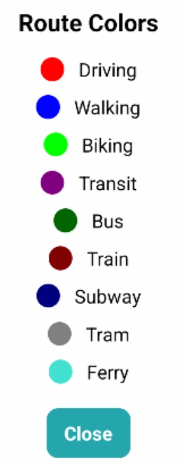
Priority System
Sometimes, the number of locations added combined with stay duration and travel duration may exceed the total amount of time/days your trip is supposed to take place.
When such a situation occurs, EasyGoing will notify you of this change and you will be offered two options:
Go Back: "Cancel" - Go back to the Add Destinations Screen and either change durations, remove locations, or increase your trip dates.
Priority System: "OK" - This will use the priorities set in the Add Destinations Screen and remove lowest priority destinations until your trip duration will fit the current allocated amount of time.
Once you're done customizing your trip with reordering, modes of transportation, etc, you can press "Review Itinerary" to proceed to Step 3.
Step 3:
Review Itinerary
All of your destinations are organized here by their dates. You can press open each day to see information about the location, duration, etc.
Here, you're unable to edit any information so you don't have to worry about accidentally pressing the wrong thing.
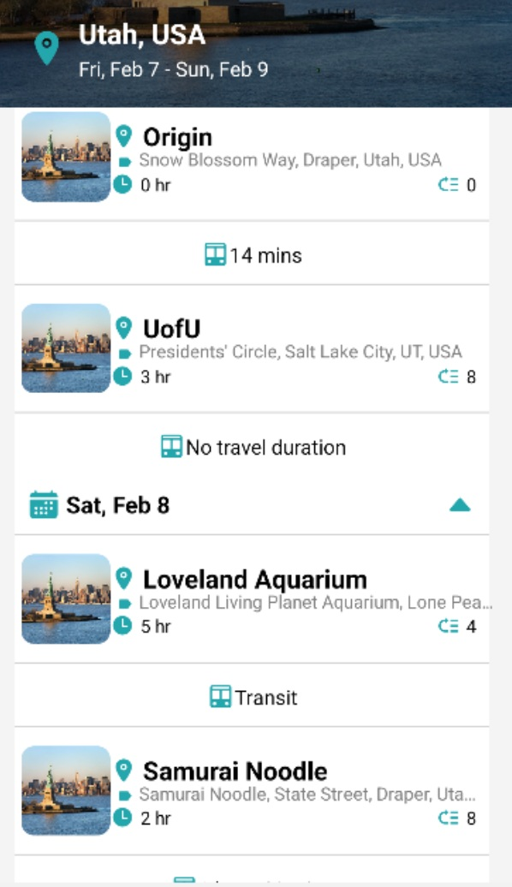
Once you have confirmed all of your information, you can either finish the trip by hitting the checkmark in the top right, or you may export your trip into a .ics format for you to add to your calendar.
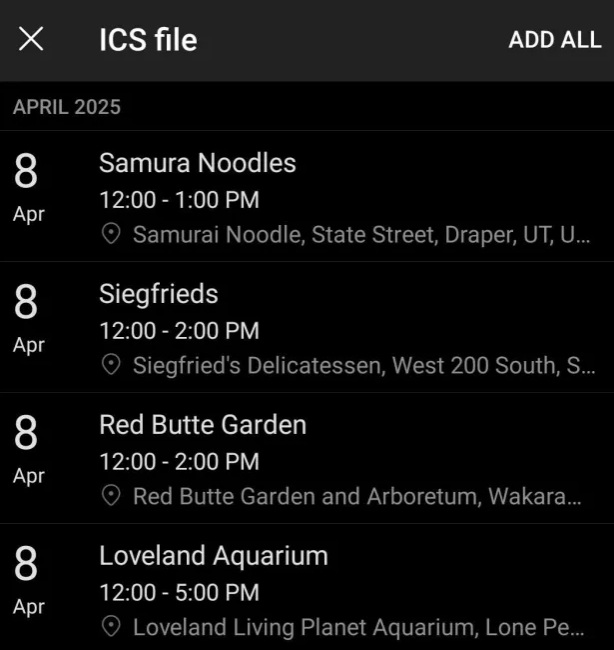
When you're done, it will bring you back to the Home Screen.
Congratulations! You have successfully made a new trip with EasyGoing!
 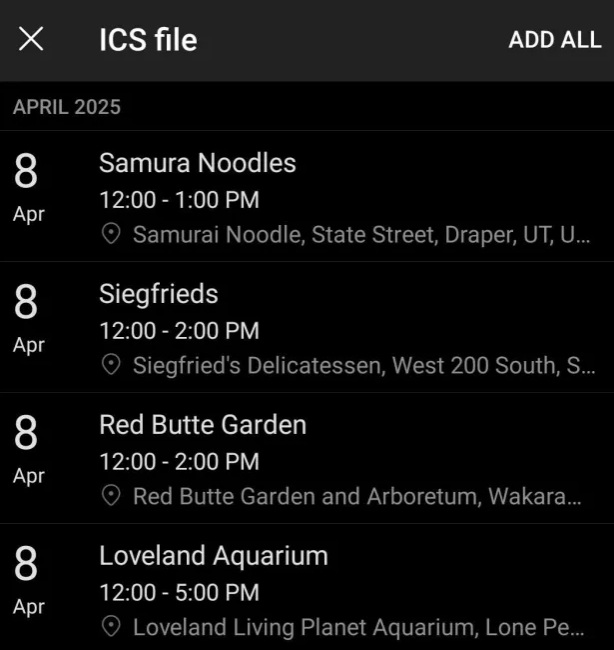
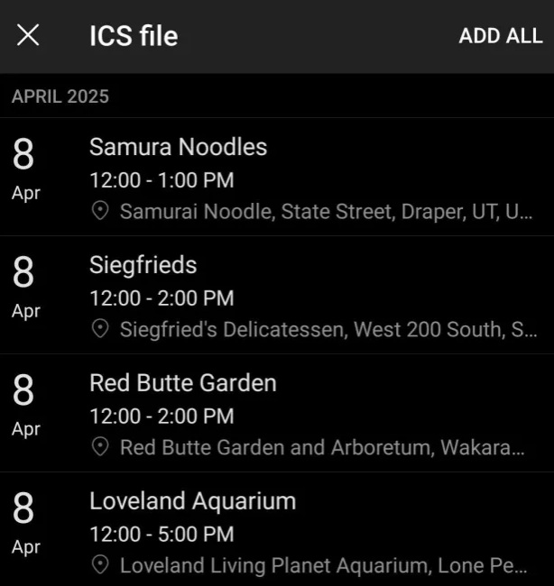